{kind=link}
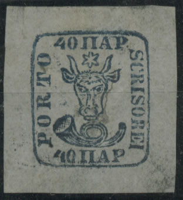


Return To Catalogue - Rumania 1858 first issue - Rumania 1862 issue
Note: on my website many of the
pictures can not be seen! They are of course present in the
catalogue;
contact me if you want to purchase it.
5 p black (for newspapers) 40 p blue 80 p red
These stamps were issued in 1858 on bluish wove paper and in 1859 on white wove paper. The head of the bull's doesn't touch the posthorn in any of the values (the forged stamps of all countries by J.Dorn). According to J.Dorn the remainders of the 5 p have a broken bottom frameline. The 5 p is very rare in used condition.
Value of the stamps |
|||
vc = very common c = common * = not so common ** = uncommon |
*** = very uncommon R = rare RR = very rare RRR = extremely rare |
||
| Value | Unused | Used | Remarks |
| 5 p | RR | RRR | |
| 40 p | RR | RR | |
| 80 p | RR | RRR | |

For information concerning cancels on these stamps, click here.
5 p black: How to recognize a genuine stamp? The genuine stamp is printed on very transparent paper (Album Weeds). There is a gap in the top of the 'P' of 'PORTO'. The 'O' of this same word generally has an opening at the top too. The left hand side of the top part of the 'T' of 'PORTO' also has a gap. The star above the bull's head is 6-pointed and open at the bottom.
The next forgeries have crescent shaped (bent inwards) horns of the bull, also the loop of the horn is too big:
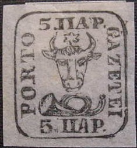

(Forgeries)

Forgery with crescent like horns; I believe this is the second
forgery described in Album Weeds. There is a comma joining the
"P" of "PORTO" to the frameline (but I've
seen this forgery without it as well).

The horns are crescent shaped in this forgery. The "5"
has a elaborate curly bottom part. The star is too large.
Forgery with crescent shaped horns of the bull. The mouthpiece
touches the last "E" of "GAZETEI".

Another forgery with inwards curling horns.
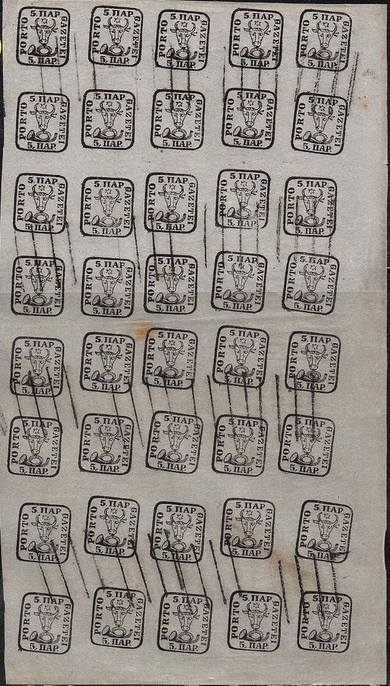
Other forgeries exist of this value, for example one with a very small loop of the horn and one with the all the words touching the border.
(Other forgery, left: reduced size)


Modern forgery? The lettering is too large. Next to it a much
older looking similar forgery with a parallel lines cancel. Also
one with a "GALATZ 12 9 MOLDOUA" cancel (Hamburg
forgery?)
Forgeries, probably made by the same forger, also in wrong colour
5 p violet, reduced sizes. I've also seen the 8 pa of this
particular forgery.

This forgery was offered as genuine on an Ebay auction (2005),
there is an expert mark 'J.SCHL' at the back of the stamp.
However this expertiser, Julius Schlesinger, was known not to be
very relialble.


Oneglia(?) forgeries

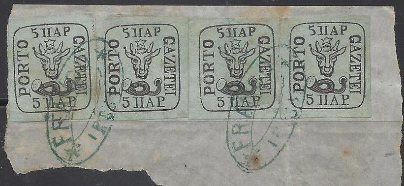


Other forgeries of the 5 pa value

More deceptive forgery
Note the distorted left side of the posthorn in this forgery.


Block of 4 forgeries, judging from the paper made by the same
forger.

Yet another forgery.
40 p blue: In the 40 p the star above the head of the bull should be open at the top and should have 6 rays. The '4' should also be open at the top.
Forgery, star not open. The first 'O' of 'PORTO' is placed much
higher than the posthorn (it is level in the genuine stamps).
In the above forgery, the star is not open and the ears are different among other differences.
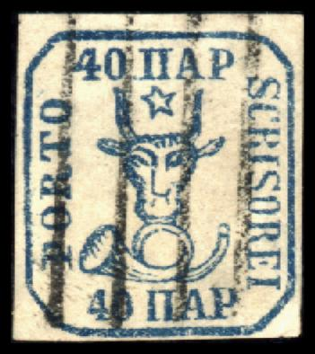 
6th forgery of Album Weeds, star with 5 rays only, cow has a
human nose and rounded ears.
The above forgery is the sixth forgery described in Album Weeds; It is printed in dark blue, the star has 5 rays instead of 6. The bull has a human nose, there is no central line in the ring of the posthorn. There are lines in the mouth of the posthorn slanting downwards. The '4' of '40' is closed at the top. The left eye of the bull (from our point of view) is closed. Here, it bears a cancel of parallel lines, but I've also seen it uncancelled. Next to it a 80 p forgery, most likely made by the same forger (the desing looks engraved here).

(Forgeries)
In the above forgery the 'P' touches the 'I' in the right bottom corner. Furthermore the ears of the bull are different. One ear is pointing towards the 'R' of 'SCRISOREI' instead of the 'C' of this word.
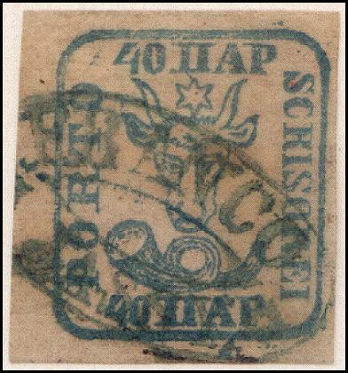
In this forgery of the 40 pa value, the left cowhorn extends to
under the "4" and almost touches it.
Forgeries on letters also exist, example:
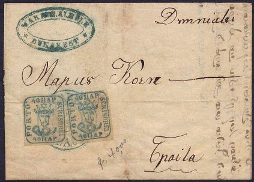
(zoom in)
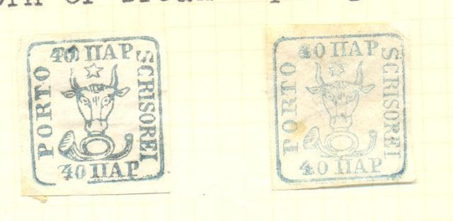
Forgery with last 'I' of 'SCRISOREI' rather close to the 'P' of
the value inscription. The first two images have a 5-pointed
star. The last one has been 'fixed up' and has a 6-pointed star.


Engraved(?) forgeries with 5-pointed star.


Forgeries of the 40 pa, made by the same forger. Two of them with
a circular "GALATZ 26/5 MOLDOVA" cancel.


Other forgeries of the 40 pa value
Forgery in the wrong color: 40 pa black on blue.
Modern(?) forgeries:
Other forgery, very blur in light blue. The letters on top are
too larger, the horns and the star are too small.

Forgeries, probably made by the same forger (Hamburger forgery?)
Also one with a "GALATZ 13 9 MOLDOUA" cancel.
80 p red: In the genuine 80 p the horn is never connected to the bull's head.
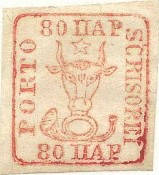
In the above forgery the horn is connected to the bull's head (I presume this is the 7th forgery described in Album Weeds)! Also the genuine stamp has 6 rays in the star, this one only has 5. The 'R' and 'I' of 'SCRISOREI' are joined in the genuine stamps. The horns of the bull point between '8' and '0' and towards the the left lower corner of the 'P'.
Hamburg forgery with a "JASSY 20 5 MOLDOUA" cancel,
reduced size. I've seen more of these forgeries with this cancel.


I've been told that this is a so-called 'Hamburg forgery', I have
no further information. The "8" of the upper
"80" is placed too far to the left (above the second
"O" of "PORTO"). All the letters are too big.
Next to it a forgery of the next set, made by the same forger
(also with too large lettering).


Some different forgeries of the 80 pa value with 5 rays in the
star instead of 6.

Forgery with 5 rays in the star instead of 6. I've also seen this
forgery with a cancel consisting of a pattern of dots and
uncancelled. The ears are peculiarly pointing upwards.
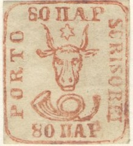
Other forgery of the 80 pa value

The horn doesn't have a proper 'loop' in this forgery.

Primitive 80 par forgery.

80 par forgery with the star very different from a genuine stamp.

Another forgery of the 80 p value.

Forgery pasted on a piece of letter
Bogus 'reprints' of the 80 p value, but in black. Note that there
is always a break in the outer frameline next to the
"RE" of "SCRISOREI" and that the star is
attached to the bull's head. I've seen a whole sheet of these
reprints (32 stamps, in 4 rows of 8, the bottom two rows are
printed in tete-beche, the distance between the second and third
row is larger).
There exist more deceptive forgeries of the 80 p stamp.

Sperati forgeries ('blackprints') of the 5 p and 80 p stamps. The
breaks and dots in the frameline of the 5 p are always in the
same position. In the 80 p, there is a 'smudge' on top of the
right hand side of the outer frame.
Forged cancels made by Sperati.
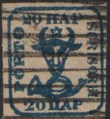
A bogus value: 20 pa blue; I've seen it cancelled with straight
lines (as above) or with an ellipse with unreadable letters.

The forger Mladenovic made forgeries
of these stamps, here a page from the Philatelisten Zeitung of
1910.
The forger Raoul de Thuin also made forgeries of the 40 p and 80 p values. Images can be found in the book 'The Yucatan Affair' by the American Philatelic Society.
{kind=link}
{kind=link}
{kind=link}
{kind=link}
{kind=link}
{kind=link}
{kind=link}